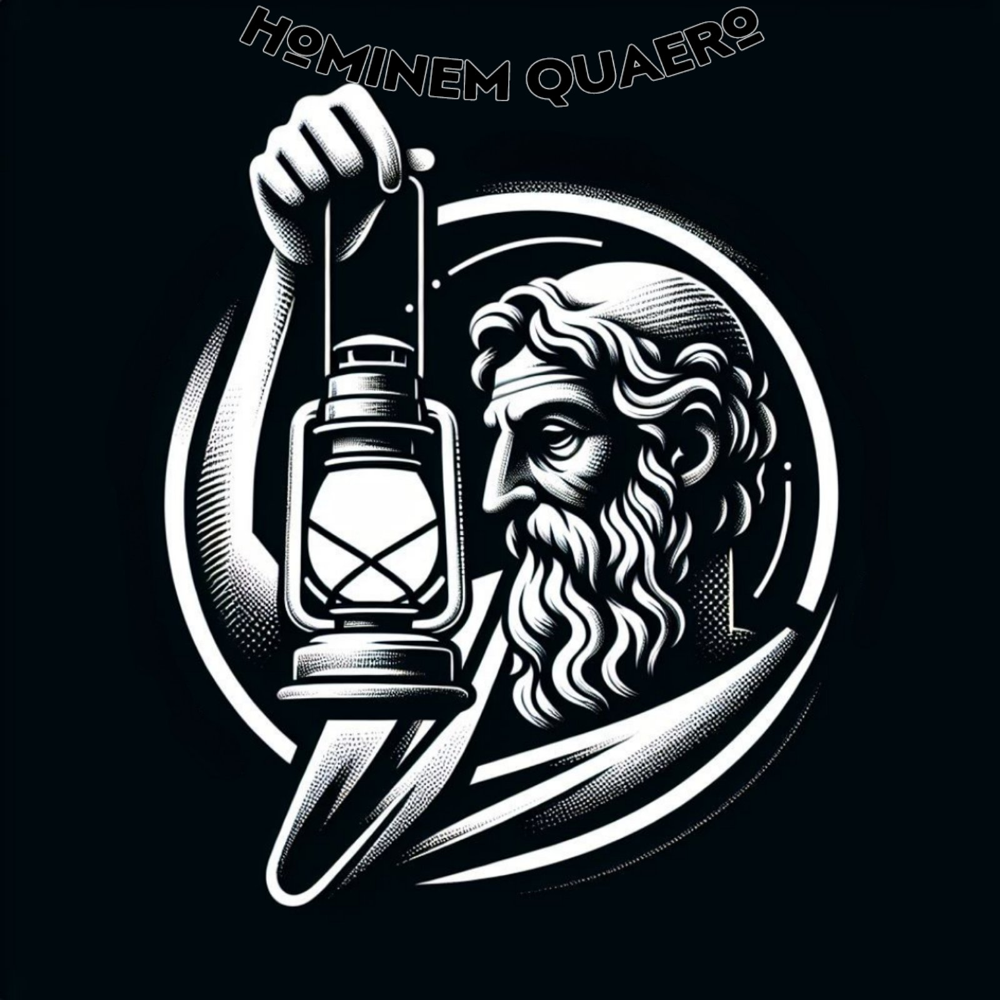
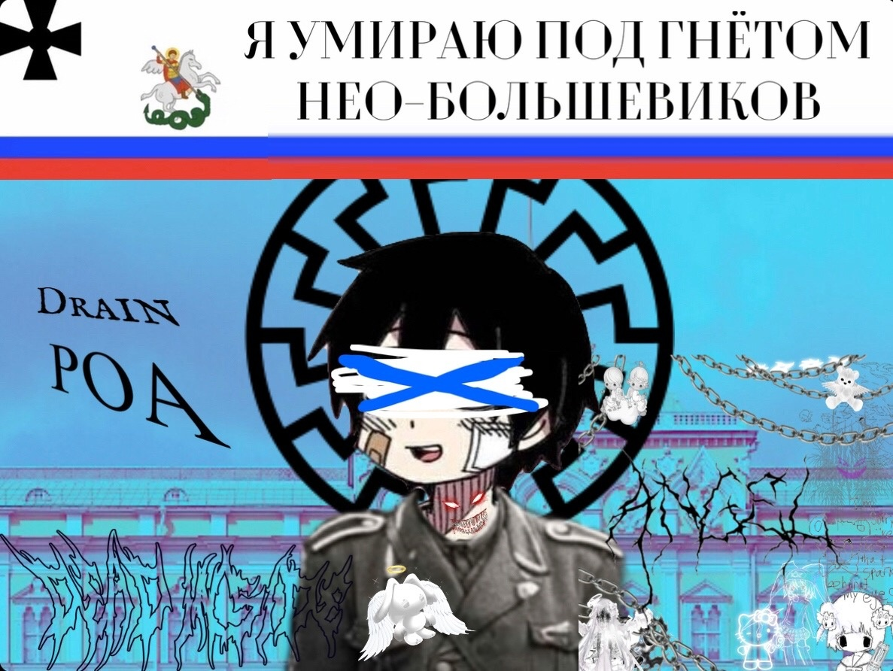

Влад потерял связь времени
Проект гексагон - проектные мастерские
В настоящее время имеется более 400 исследовательских работ, а также около 5000 страниц лабораторных записей, которые рисуют полностью последовательную картину экологических и биологических преобразований этой планеты.
кабель формирует массы плоти в схему выхода, обведённую эластичной болезнью Города Трупов//
Когда же оружие притупится и острия обломаются, силы подорвутся и средства иссякнут, князья, воспользовавшись твоей слабостью, поднимутся на тебя. Пусть тогда у тебя и будут умные слуги, после этого ничего поделать не сможешь.

_f1cb3bf0-27fd-47ba-b238-c7079734372e_animation (1).gif
